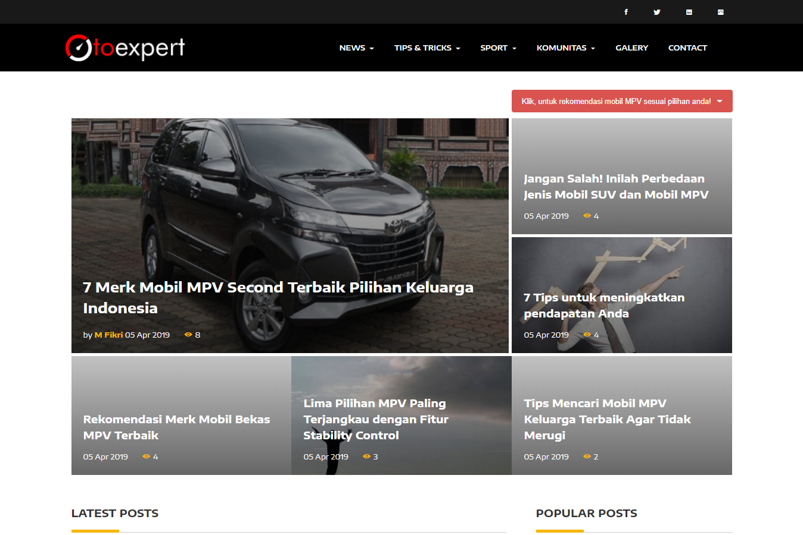
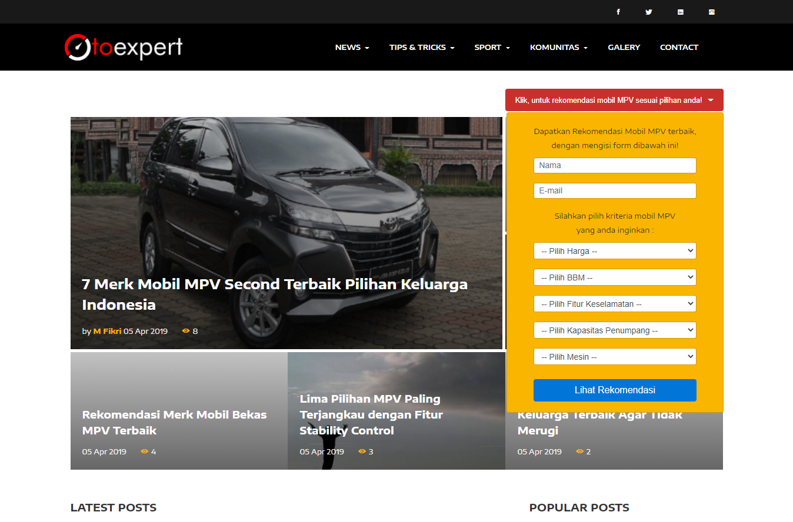
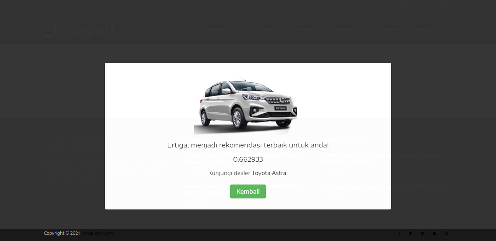
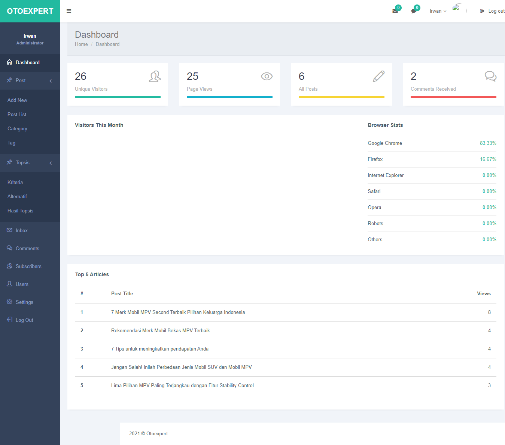
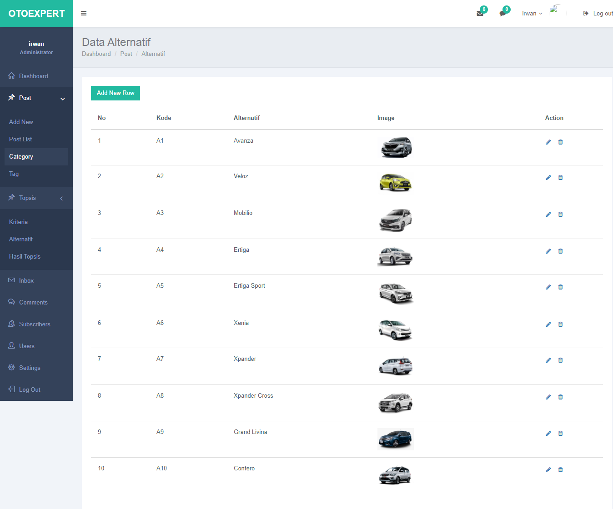
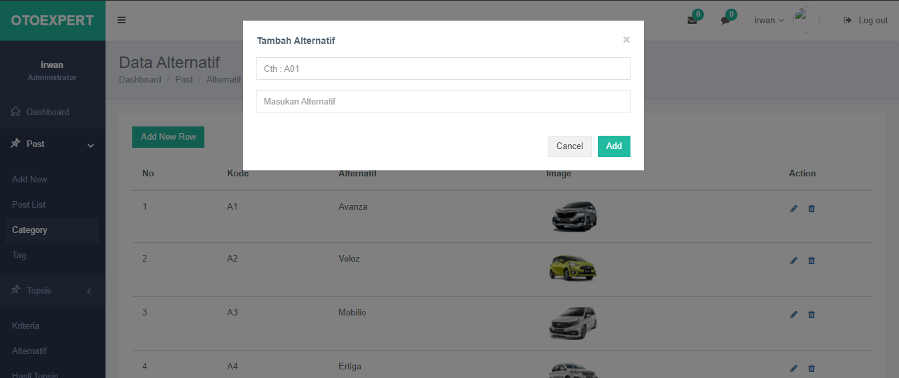
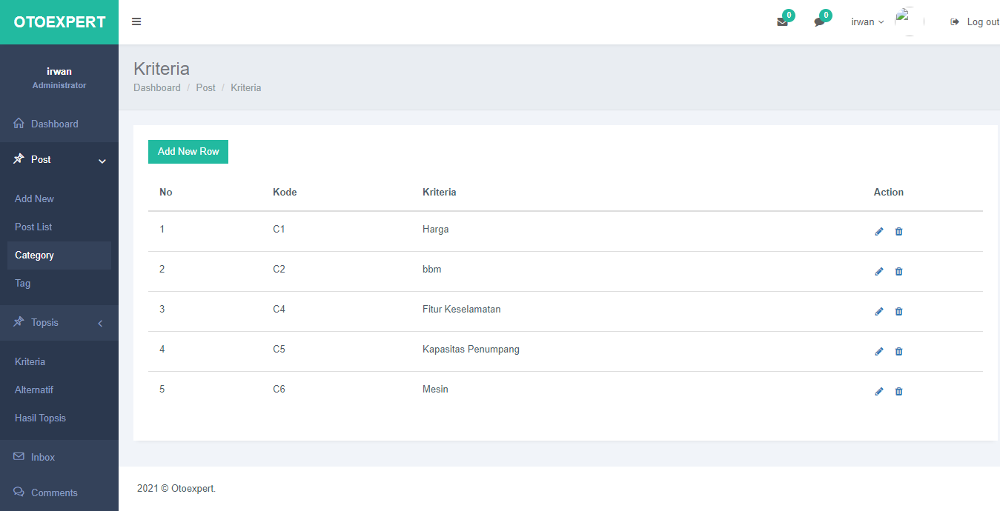
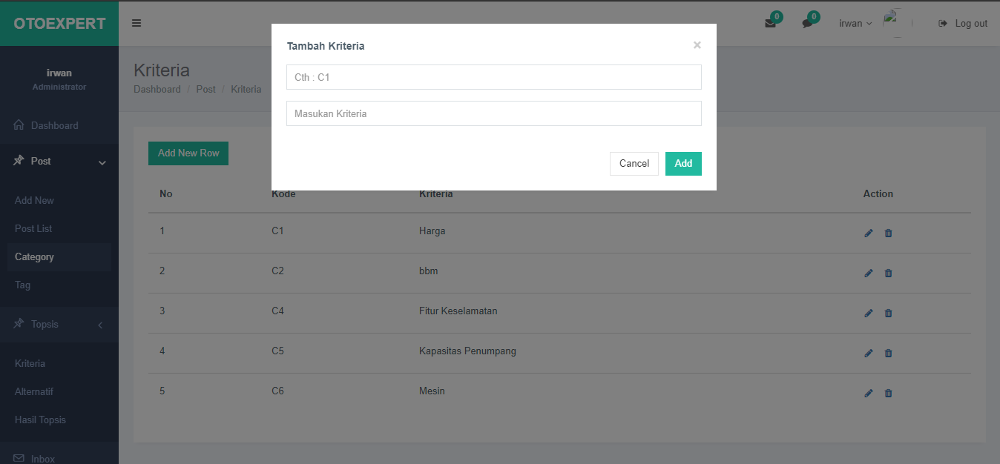
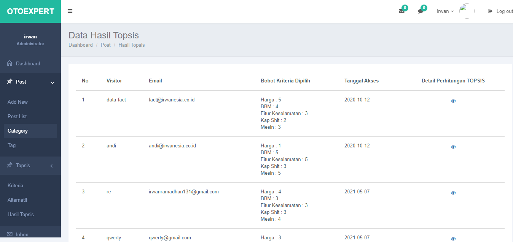
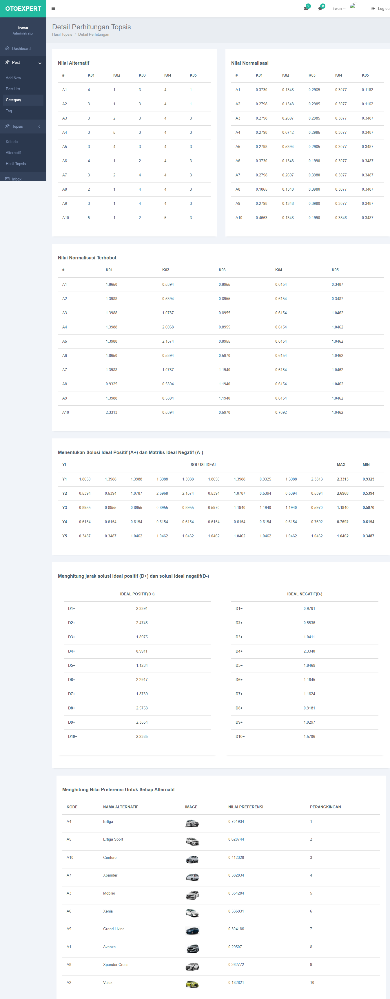

Sistem ini digunakan sebagai platform untuk mendapatkan rekomendasi mobil berjenis MPV berdasarkan kriteria-kriteria yang disediakan sistem, yang kemudian client atau user dapat memilih kriteria-kriterianya. lalu dari kriteria-kriteria yang dipilih oleh user akan dioleh menggunakan metode TOPSIS sehingga akan mendapakan hasil akhir yaitu sebuah rekomendasi mobil berjenis MPV.
sistem ini dibangun dan dikembangkan menggunakan bahasa pemrograman PHP murni atau native dengan versi PHP 7.0.1. berikut desain atau tampilan dari sistem rekomendasi mobil MPV menggunakan metode TOPSIS
A. Halaman User/client
Pada halaman otoexpert menampilkan halaman portal otomotif dimana terdapat seebuah fitur yang dapat digunakan untuk mengetahui rekomendasi mobil MPV berdasarkan kriteria-kriteria yang pengunjung atau user pilih
Fitur isi form data kriteria-kriteria mobil MPV yang diinginkan. dalam form input tersebut user dapat mengisi dan meemilih kriteria-kriteria yang sesuai keinginan user. dari harga, kapasitas mesin, kehematan BBM, kapasitas penumpang dan kriteria lainnya.
Output atau hasil rekomendasi merupakan halaman hasil yang ditampilkan kepada user dimana hasil atau rekomendasi tersebut didapat berdasarkan user setelah mengisi atau memilih kriteria-kriteria yang telah disediakan.
B. Halaman Admin
Untuk mengolah data alternatif, data kriteria dan melihat hasil secara detail dari perhitungan metode TOPSIS ini, maka terlebih dahulu harus login ke dalam sistem sebagai admin
2. Halaman Dashboard
3. Halaman Data Alternatif
4. Halaman Tambah Alternatif
5. Halaman Kriteria
6. Halaman Tambah Kriteria
7. Halaman Data User/Client
8. Halaman Detail Perhitungan
